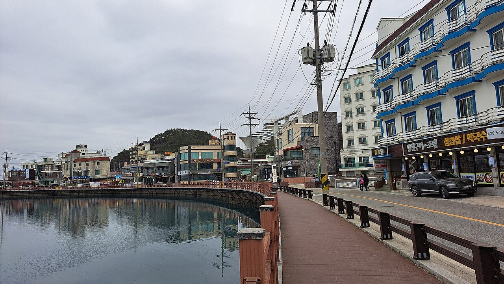
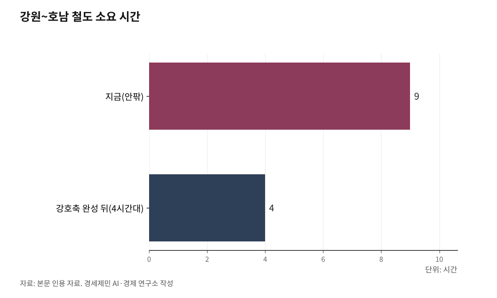

강호축 준고속철도, 2031년 강릉-목포 4시간으로 연결
서울 거쳐 9시간 안팎 걸리던 강원~호남, 갈아타지 않고 한 번에
충북선 고속화가 핵심... 청주~제천 1시간11분이 40분대로 줄어든다
청주·무안공항 살리고 경부축 쏠림 푼다... 강호축이 국토를 다시 짠다
AI경세제민=김갑봉 기자 | 인하대 해양AI융합센터 김갑봉 연구교수

강호축 완성이 2031년으로 다가온다. 강원 강릉에서 충청을 거쳐 전남 목포까지 국토를 대각선으로 잇는 철도망이다. 2014년 구상이 나온 지 12년 만에 사업이 궤도에 올랐다.
강호축이 완성되면 9시간 안팎 걸리던 강원~호남이 환승 없이 4시간대로 좁혀질 전망이다. 서울로만 쏠리던 국토의 흐름도 처음으로 대각선을 따라 흩어진다.
강호축이란 무엇인가
강호축은 강원 강릉에서 원주, 충북 충주와 청주공항, 전북 익산, 광주 송정을 거쳐 전남 목포로 이어진다. 동서 방향 철도축이다.
서울~부산을 잇는 경부축이 종축이라면, 강호축은 이를 보완하는 대각선 축이다. 2014년 이시종 전 충북지사가 처음 제안했다. 경부축에 치우친 국토 발전을 바로잡자는 균형발전 전략이었다.
오래 청사진에 머물던 강호축은 지난 6월 3일 제9회 전국동시지방선거를 계기로 동력을 얻었다. 앞서 5월 19일 더불어민주당 신용한 충북지사 후보, 우상호 강원지사 후보, 민형배 전남광주통합특별시장 후보가 정청래 대표와 함께 국회에서 강호축 완성을 공동 공약으로 내놨다.
세 후보 모두 당선됐다. 7월 1일 광주와 전남이 통합특별시로 출범하면서, 과거 네 시도에 걸치던 축이 세 광역단체의 공동 과제로 정리됐다. 구상이 권력의 의지를 얻은 셈이다.

9시간이 4시간으로, 강호축이 바꾸는 시간
강호축이 주는 가장 큰 변화는 시간이다. 지금 강릉과 목포를 오가려면 서울로 올라가 갈아타야 한다. 9시간 안팎이 걸린다.
민주당은 강호축이 완성되면 시속 200km 이상으로 달리는 열차가 두 도시를 환승 없이 4시간대에 이을 수 있다고 본다. 거리가 절반 이하로 줄어드는 셈이다.
충청도 마찬가지다. 충북도 분석을 보면 충북선이 고속화되면 청주~제천(봉양)은 1시간11분에서 40분대로, 청주~충주는 45분에서 20분대로 줄어든다.
서울을 거쳐야만 만나던 강원과 호남, 그 사이에 낀 충청이 한 줄로 묶인다. 환승 불편이 사라지면 사람이 오가고 물류가 흐른다. 관광 시장이 넓어지는 선순환이 시작된다.
충북선 고속화가 강호축의 열쇠
강호축은 전 구간에 새 선로를 까는 사업이 아니다. 강릉선과 중앙선, 충북선, 호남선과 호남고속선을 잇는다. 끊긴 허리만 고속화한다.
핵심은 충북선이다. 청주공항에서 제천 봉양까지 85.5km 가운데 44.8km를 새로 놓고 40.7km는 기존선을 개량한다. 사업비는 1조9058억원이다. 충북도와 충주시가 258억원을 대고 나머지는 국가가 부담한다.
2019년 예비타당성조사를 면제받았다. 2023년 12월 국토교통부가 기본계획을 고시했다. 2026년 하반기 착공해 2031년 완공한다는 목표다.
또 다른 선행사업인 천안~청주공항 복선전철도 2026년 착공해 2030년 준공을 노린다. 두 사업이 맞물려야 강릉~목포 직결이 완성된다.
청주·무안공항도 함께 뜬다, 강호축의 파급효과
강호축의 효과는 철도에만 머물지 않는다. 청주공항은 강호축의 분기점이 되면서 강원과 호남 여객을 함께 모으는 거점으로 떠오른다.
호남 끝단에서는 강호축이 호남고속철도 2단계와 만난다. 이 노선이 광주송정에서 무안국제공항을 거쳐 목포로 이어지면서, 무안공항이 전국 지방공항 가운데 유일하게 고속철도와 직접 연결된다. 새 신공항을 중복으로 짓지 않고도 기존 지방공항을 살리는 길이 열린다.
충청권에서는 강호축이 충청권 메가시티 구상과 맞물린다. 청주공항 일대가 새 성장 거점으로 자란다. 강원 원주와 충북 충주도 동서 물류가 지나는 길목으로 떠오를 것으로 기대된다.
남북관계가 풀리면 강호축이 시베리아 횡단철도로 이어지는 국제철도축의 중심이 될 수 있다는 기대도 있다. 다만 대륙철도 연결은 정세에 달린 먼 전망이다. 당장의 효과와는 구분해 봐야 한다.
모두가 고속일 필요는 없다, 강호축의 설계 철학
강호축은 한국 철도가 풀어야 할 숙제 하나를 정면으로 보여준다. 모두가 시속 300km로 달릴 필요는 없다는 사실이다.
경부·호남고속선이 300km급 전용선이라면, 충북선 개량 구간은 250km급, 기존선 활용 구간은 150km급이다. 강호축에 들어가는 차세대 열차 KTX-이음은 준고속열차로, 구간마다 다른 속도로 달린다.
새 고속선을 통째로 까는 대신 멀쩡한 기존선을 살리고 굽은 허리만 편다. 막대한 재원을 아끼면서 지방과 지방을 잇는 가장 현실적인 답이다. 속도가 아니라 용도에 맞춘 설계, 그것이 강호축의 철학이다.
이 셈법은 재정에도 시사점을 던진다. 수도권 광역사업은 수도권 재원으로 풀고, 한정된 국가 철도 예산은 강호축처럼 비수도권을 잇는 광역 연결에 쏟자는 재설계 원칙과 맞닿는다.
X자·U자 완성을 위한 남은 매듭
강호축은 더 큰 그림의 한 축이다. 경부축과 교차하면 국토에 'X자' 골격을 새긴다. 서해안을 따라 인천에서 목포로 내려가는 서해선 축과 목포에서 맞물리면 'U자' 순환망의 한 변을 이룬다.
호남 끝단의 호남고속철도 2단계는 변수를 안고 있다. 광주송정~목포 77.8km 가운데 고막원에서 무안공항을 거쳐 목포 임성리까지 44.57km를 신선으로 짓고 있다. 유적 발굴로 개통이 2027년 하반기로 미뤄졌고, 2025년 6월말 공정률은 51%다. 무안공항을 경유하는 우회 노선이라는 점도 운행시간을 따질 때 함께 봐야 한다.
남은 매듭도 있다. 서해선 KTX의 군산~목포 연결, 전주와 광주를 잇는 호남광역급행철도 HTX(호남 트레인 익스프레스), 인천국제공항으로 들어가는 제2공항철도다. HTX는 김갑봉 연구교수가 제안한 개념으로 아직 정식 사업은 아니다.
정치 변수도 남았다. 강호축은 대규모 국가사업이라 재정 부담과 오송 연결선 문제가 따라붙는다. 국민의힘은 경북·충북을 잇는 '중부내륙 성장축'으로 맞선다. 균형발전 노선을 두고 여야가 부딪친다.
그래도 강호축 2031년 완성은 서울 일극 체제를 다중심 망으로 바꾸는 거대한 재설계의 첫 단추다.
※ 이 기사는 AI 프로그램 클로드를 활용해 작성했습니다.
참고문헌
- 양형욱, "'경부선과 X자 완성'…與, 강릉·목포 잇는 '강호축' 공약 발표", CBS 노컷뉴스, 2026년 5월 19일. https://www.nocutnews.co.kr/news/6519581
- 송지원, "與 '강원~충북~호남 잇는 철도망 구축… 환승없이 4시간30분에'", 파이낸셜뉴스, 2026년 5월 19일. https://www.fnnews.com/news/202605191814157494
- 기획재정부 발표 인용, "정부, '예타 면제' 23개·24조 사업 선정…'국가 균형발전 차원'(종합)", 뉴시스, 2019년 1월 29일. https://mobile.newsis.com/view/NISX20190129_0000544247
- 백운학, "충북선 고속화 2026년 착공...전국 2시간대 돌파", 뉴스핌, 2023년 12월 4일. https://www.newspim.com/news/view/20231204000581
- 홍성헌, "'청주~제천 41분' 충북선 고속화 2026년 착공", 국민일보, 2023년 12월 4일. https://www.kmib.co.kr/article/view.asp?arcid=0018935970
- 이상연, "국가 고속철도망 X축 완성 대한민국의 중심, 충북선 고속화 기본계획 고시", 충남일보, 2023년 12월 4일. https://www.chungnamilbo.co.kr/news/articleView.html?idxno=746183
- 장병극, "강호축 핵심철도 '충북선 고속화' 궤도 오른다", 철도경제신문(철도산업정보센터 게재), 2023년 12월 6일. http://www.kric.go.kr/jsp/board/portal/sub01/railNewsDetail.jsp?p_id1=M01060101&p_id2=542184&p_id3=2023.12.06
사진 출처
· [대표사진] Bunsik, "Gangneung, Korea (2).jpg", 위키미디어 공용, CC0, https://commons.wikimedia.org/wiki/File:Gangneung,_Korea_(2).jpg
※ 이 기사는 인공지능을 활용해 작성했습니다.
관련기사
- 고속철도 매진인데 심야 운행 멈추는 이유, 새벽 5~6시간 정비 공백
- 코레일 사장이 15년만에 KTX 요금 현실화 꺼낸 이유
- [환황해 철도망⑧] 열차페리 1~3년, 해저터널 10년 뒤... 첫 단추는 인천신항 인입선
- [환황해 철도망⑦] 제재 밖 북한 텅스텐, 3월 3257만달러에서 8월 28만달러로
저작권자 © AI경세제민 무단전재 및 재배포, AI학습 및 활용 금지